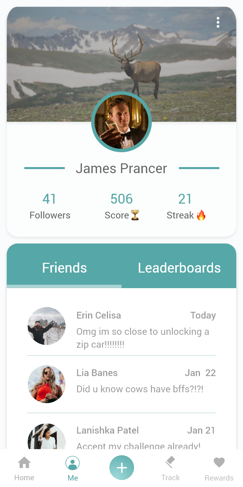
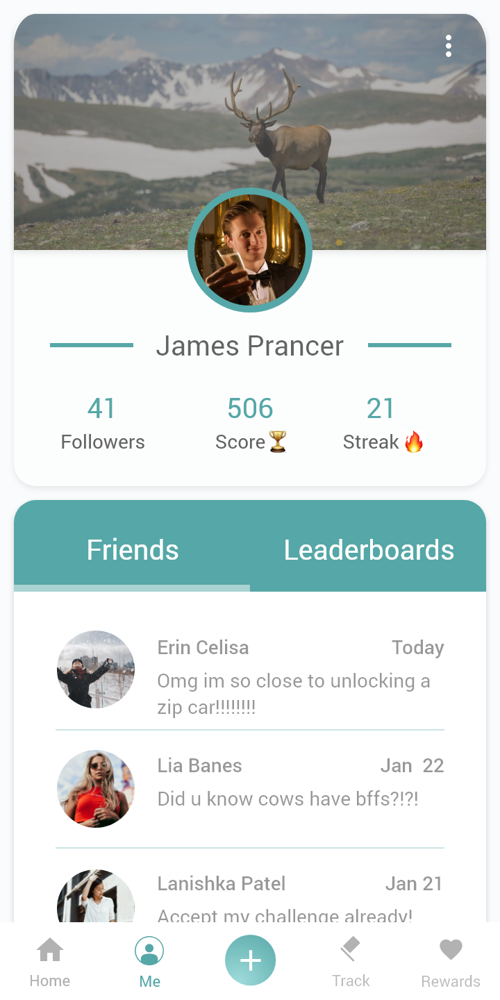

The Challenge
With the growing effects of climate change, this challenge approached the problem of how we could better understand our direct impact to the environment, from simply the choices we make everyday. The problem was rather broad and ambiguous leaving us much room for interpretation and creativity. The only requirements that the challenge prompted for was that the digital product must:
- • Make it easy for someone to log their information every day.
- • Assess their progress in a way that helps them understand their impact.
- • Encourage daily use, while keeping the user interested over a long term.
Inspiration
My two main inspirations were apps that I have used in the past, MyFitnessPal and Carrot Rewards. Both apps track user inputs, such as food consumption and steps, and provides an incentive to keep the user motivated. They also have an aspect of gamification, with MyFitnessPal using your own measurements and progress, while Carrot Rewards uses a currency system that you can transfer to your favourite loyalty program. To get the users to continuously use their platforms, both apps offer daily incentives. Similarly, users in FoodPrint are sent daily challenges and quizzes so that when completed, nets them points added to their total FoodPrint score.
Carrot Rewards
MyFitnessPal
Opportunity
FoodPrint lets users set goals (such as wanting to reduce their carbon footprint by twice the amount), which when combined with the user’s profile, will generates personalized challenges and tips based on the food they consume. For example, if you put in that you have ate a lot ground beef, it will quiz you about the large environmental footprint of cattle farms. This app is targeted towards people that want to be more environmentally conscious about their daily choices when it comes to eating. I wanted to help show transparency in the food system by informing the true costs of our meals. In a “tragedy of the commons”, individual incentives far outweighed collective concerns and action. If we are more informed about the effects of our food purchase decisions, that is one step closer to a cleaner world.
Design
Our client came to us with a rather broad problem. Through research, it was determined that people who travel also want to meet new people, but currently 58% of people reported as 'unhappy' or 'satisfactory' with their ability to 'spontaneously meet new people'.
Home
I believe great design, is just as greatly influenced by the empathy towards your users, and the understanding of that human experience.
Profile
I've previously worked at AIR MILES, Canadian Tire, and Developer's Foundation. I'm currently working at eCampusOntario, but you might find me sometimes at the AV/IT Help Desk at OCAD University.
 

Tracker
I believe great design, is just as greatly influenced by the empathy towards your users, and the understanding of that human experience.
Rewards
I've previously worked at AIR MILES, Canadian Tire, and Developer's Foundation. I'm currently working at eCampusOntario, but you might find me sometimes at the AV/IT Help Desk at OCAD University.
Add Food
I believe great design, is just as greatly influenced by the empathy towards your users, and the understanding of that human experience.
I've previously worked at AIR MILES, Canadian Tire, and Developer's Foundation. I'm currently working at eCampusOntario, but you might find me sometimes at the AV/IT Help Desk at OCAD University.
Key Learnings
Our client came to us with a rather broad problem. Through research, it was determined that people who travel also want to meet new people, but currently 58% of people reported as 'unhappy' or 'satisfactory' with their ability to 'spontaneously meet new people'.